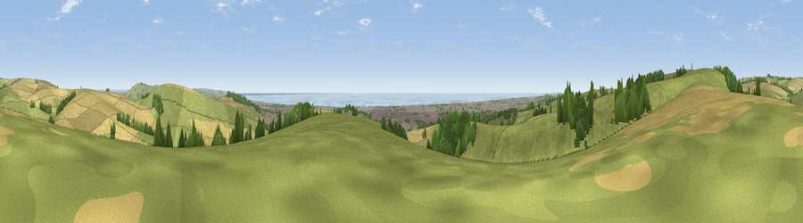

Viewpoint near Sompting
#4017 in England · top 20% of its area beats it · near SomptingThe view, rendered

A 360° render of this exact spot computed from the terrain model, tree cover and land cover — summer colours, afternoon light, calibrated against photographs of famous viewpoints. Real trees, hedges and buildings will differ in detail.
The panorama
Grey silhouette: terrain skyline in each direction (720 bearings, Earth curvature and refraction included). Dashed green: skyline with trees (+15 m) and buildings (+8 m) as obstacles. Blue strip: how far the ground is visible on each bearing.
Where the view opens
Wedge length = distance to the farthest visible ground on that bearing (vegetation-aware). Rings at 10, 25 and 50 km.
What fills the view
52% grassland · 24% cropland · 9% water · 8% woodland · 7% built-up
Angular shares of the visible panorama (visual magnitude), not map area. Landscape diversity 0.56 (0–1 Shannon).
Key numbers
More beautiful places nearby
The staircase of upgrades: each row has a higher view potential than everything closer. Driving times are estimates from straight-line distance, calibrated against real road routing — check an actual route before setting out.
| Place | Direction | Drive | Score |
|---|---|---|---|
| Viewpoint near Findon | NW · 1 km | ~3 min | 76.4 |
| Viewpoint near Findon | NW · 2 km | ~4 min | 77.8 |
| Steep Down | ENE · 2 km | ~4 min | 79.1 |
| Steyning Round Hill | NNE · 3 km | ~8 min | 79.9 |
| Viewpoint near Steyning | N · 4 km | ~9 min | 82.6 |
| Chanctonbury Ring | NNW · 5 km | ~11 min | 87.0 |
| Firle Beacon | E · 33 km | ~51 min | 88.9 |
| Viewpoint near Niton | WSW · 73 km | ~96 min | 89.2 |
50.85261, -0.36375 · source: screening · position refined by local search. Computed location — check access rights before visiting.